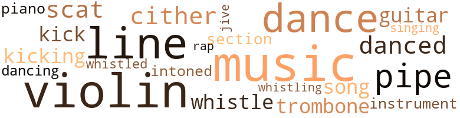
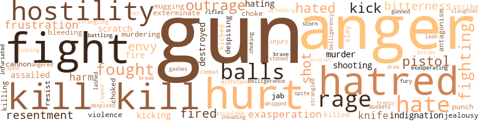
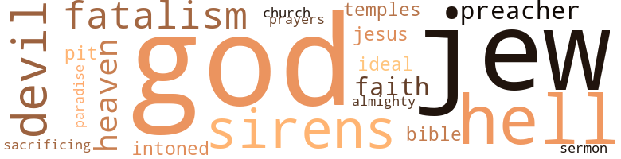

Requiem for a Black American Capitalist, by Wms-Forde, Billy (1975)
84 music-related terms matched in this text.
Most frequent terms in this topic: music (13); violin (12); line (11); dance (9); pipe (5)
dance.n.01
Definition: an artistic form of nonverbal communication
| word | sentence |
|---|---|
| dance | It was a slow dance , and she was sorry about that , thinking he might be one of those guys who 'd move in right away and try " laying in the cut . . . . " Many guys like that would pull you in so close , grind against you so obscenely , almost screw you on the dance floor . |
| dance | If she said No to the dance , did n't allow him to get close to her , she could still be certain of beating this thing , of getting out of this apartment and going home . |
| dance | ... There was another shadowy memory of the night he had drunkenly picked her up at some party or dance , overwhelming her feeble protests , and slept with her in her tiny lonely kitchenette . |
dance.v.02
Definition: move in a pattern; usually to musical accompaniment; do or perform a dance
| word | sentence |
|---|---|
| dancing | She should stop dancing with him right this minute ! |
dance.v.03
Definition: skip, leap, or move up and down or sideways
| word | sentence |
|---|---|
| danced | Most of the time she kept a distance between herself and people she did n't know very well when dancing , but she could n't remember ever being as ramrod straight and distant as she was as she danced with Winston now . |
| dance | And since that was settled and she was only going to talk about this thing and not get involved anyway , she allowed herself to dance a little closer . |
| danced | Why had she danced like that when she had n't meant to ? |
| danced | She had still been feeling guilty about the vulgar way she had danced the night before , so unlady-like , like somebody who was still a stranger to herself . |
| dance | " I mean , I am sorry I did n't get a chance to dance with you again last night ... to a . . . well , a number you might have liked better . " |
| dance | Perhaps he 'd think she was rubbing it in because he could n't dance loo hot , at least , to the fast numbers ? |
| dance | I mean , you dance very well . |
| dance | " Well , I like to dance , " she said , almost defensively . |
| dance | Why not go ahead and dance and let him think he was getting away with something ? |
guitar.n.01
Definition: a stringed instrument usually having six strings; played by strumming or plucking
| word | sentence |
|---|---|
| guitar | " Some kinda guitar or horn ? " |
| guitar | " What 's it doing in a guitar case ? |
kick.v.04
Definition: kick a leg up
| word | sentence |
|---|---|
| kick | It would have been great if she could kick her shoes off and lean back and not have to worry about a thing . |
| kick | Slick screamed , knocking the gun to the floor , trying now to kick Winston . |
| kicking | The boy followed , kicking at the man , and picking up the violin case . |
| kicking | He had only managed to get in a glancing punch beside the junkie 's head before all the people were jumping in his path and kicking and striking at the junkie for having frightened them and their children . |
music.n.01
Definition: an artistic form of auditory communication incorporating instrumental or vocal tones in a structured and continuous manner
| word | sentence |
|---|---|
| music | Gauguins , Picassos on the walls , baby grand piano music sheet still open , winding stairs leading to the upper floor . |
| Music | Music had started playing somewhere , mysteriously , automatically , the moment Marty switched the lights on . |
| music | Then he would turn on the music and jump back , clapping his hands . |
| music | New outbreak of fighting in the Mid-East ; the missing witness had n't yet been found and the Senate hearings had been suspended temporarily ; a national poll indicated that there had now been a reversal in public opinion and . . . Gru switched the dial till he got a black station with music . |
| music | She jumped back and did her thing , " got with it , " put Winston down a little , too , for to the swift , deeply throbbing Soul music he moved stiffly , uncertainly , years behind the latest steps . |
| music | When she came back into the living room where the music and the dancing and the eating and the drinking and the partying were still going strong , Winston had gone . |
| music | Also , he had put on an album when they first came in , music she had n't heard before , or had n't really listened to before . |
| music | Men could some - times be so childish , going through the same routine , the drinks , the music , and acting so charming in order to deceive a woman . |
| music | They hardly moved , the music flowing about them , holding onto each other . |
| music | She simply felt herself floating along with the music and the feeling of his arms . |
| music | The voice sounded like voices Junior had heard before ; devoid of all feeling , rasping , cold , as though all the music had been eaten out of it . |
| music | From the record shops , music flooded the street , and kids as young as five and six years old , stopped , gyrated , dipped , stomped , wiggled and then caught up to their approving parents . |
| music | Push a little bitty button up there in the plane and 1 wakes up music playing and sliding down into my pool . |
| music | The stereophonic was going and at each note of cool jazz music psychedelic lights flicked and flashed throughout the interior of the car . |
musical_instrument.n.01
Definition: any of various devices or contrivances that can be used to produce musical tones or sounds
| word | sentence |
|---|---|
| instrument | He leaned back , and pointed slowly to the paper as though it contained irrefutable conclusions , was as sacred as the bible , and though written by Winston himself he had been only a sort of instrument in putting the figures down . |
piano.n.01
Definition: a keyboard instrument that is played by depressing keys that cause hammers to strike tuned strings and produce sounds
| word | sentence |
|---|---|
| piano | He leaned forward and spoke to the driver through the opening in the bullet proof glass , changing the address from the restaurant with the soft candle lights and little silver stars floating across the ceiling and the piano playing , where they usually went to have Soul food . |
pipe.n.04
Definition: a tubular wind instrument
| word | sentence |
|---|---|
| pipe | Except that the minor details were the fucked up transmission , the exhaust pipe , and the probable need of a complete brake job . |
| pipes | And , after all , the poor woman 's pipes have been busted in her kitchen for five days and she says she has children and ca n't cook or nothing ! " |
| pipe | The white man lit a pipe and regarded Duke good-naturedly . |
| pipe | The pipe became very still . |
| pipe | One night , years ago , when he had the flu and was dopey with all the medicine Mama was giving him , a rat came crawling up along the cold radiator pipe , the biggest one he 'd ever seen . |
| pipe | Suddenly the Black man leaped at the Puerto Rican with a pipe and the sound of the blow could be heard all the way to the twentieth floor . |
rap.n.05
Definition: genre of African-American music of the 1980s and 1990s in which rhyming lyrics are chanted to a musical accompaniment; several forms of rap have emerged
| word | sentence |
|---|---|
| rap | The warm friendly sound of it - like the rap of some dude conning you in the streets , but the con sounding so cool you could n't stop yourself from listening to it yet - pushed against him and crowded him deeper into his seat . |
scat.n.01
Definition: singing jazz; the singer substitutes nonsense syllables for the words of the song and tries to sound like a musical instrument
| word | sentence |
|---|---|
| scat | The man settled into the scat , grunting discontentedly , as though he had just eaten something disagreeable or broken away from an encounter with people who had rubbed him the wrong way . |
| scats | Thick leopard skin upholstered the scats . |
| scat | He had to grip his scat again against the sensation of falling . |
section.n.01
Definition: a self-contained part of a larger composition (written or musical)
| word | sentence |
|---|---|
| section | But soon they were in a section of Brooklyn , Williamsburg or somewhere , on a street one of the worst she had ever seen . |
singing.n.01
Definition: the act of singing vocal music
| word | sentence |
|---|---|
| singing | The drums had grown louder and now there were trombones and trumpets and people yelling and singing . |
song.n.01
Definition: a short musical composition with words
| word | sentence |
|---|---|
| song | " Well , Man , I picked it up for a song , a steal . |
| song | 2 ) - A mind preoccupied by a lot of crap , the latest movies , ( he latest styles in clothing , and whatever goddamn song was number one on the " hit parade . " |
swing.n.05
Definition: a style of jazz played by big bands popular in the 1930s; flowing rhythms but less complex than later styles of jazz
| word | sentence |
|---|---|
| jive | You think I 'm going to swallow that jive ? |
tone.v.01
Definition: utter monotonously and repetitively and rhythmically
| word | sentence |
|---|---|
| intoned | Gru leaned back in his seat and intoned , " Ah 'm gon help git dese darkies educated if it kills me ! |
trombone.n.01
Definition: a brass instrument consisting of a long tube whose length can be varied by a U-shaped slide
| word | sentence |
|---|---|
| trombones | The drums had grown louder and now there were trombones and trumpets and people yelling and singing . |
| trombone | The drummer beat wildly , the woman 's breast rose as she lifted the trombone and gave a raucous blast . |
tune.n.01
Definition: a succession of notes forming a distinctive sequence
| word | sentence |
|---|---|
| line | You are very near the bottom line , already . " |
| line | Adeptly , Donald cut off a couple of cars and advanced in line . |
| line | Far back in her mind she was positive she had even staked out the exact line she had no intention of allowing him to cross . |
| line | It was his Answering Service , calling him on his private line . |
| line | If he calls back , hold him on the line , and buzz me on my private line again and I 'll take care of it . " |
| line | Unless , of course , it was his private line ? |
| line | And , yeah , right , he had never encouraged her to answer his private line . |
| line | His jumbled thoughts accepted the fact that it had to be his private line , since his business phone was turned off for the day , but now he did n't care . |
| line | Psychologically , at least , he could sense he was crossing another line . |
| line | That invisible line that all the " big boys " must have at one time crossed . |
| line | He had crossed a line that millions of people , poor people all over the world would never cross in all their life-time . |
violin.n.01
Definition: bowed stringed instrument that is the highest member of the violin family; this instrument has four strings and a hollow body and an unfretted fingerboard and is played with a bow
| word | sentence |
|---|---|
| violin | For except for the fact that the youngster carried what seemed like a violin case , he did n't seem to belong to this street of well-dressed , affluent - looking people ; dirty Ievis , old tennis shoes , and above all a black youngster when most of the tenants in the area were white . . . . |
| violin | She entered the vestibule and buzzed Winston 's bell , waiting for what was always the shock of his voice over the intercom , thinking : the kid probably stole the violin somewhere or perhaps his poor struggling mother had sent him to take violin lessons and he had spent the money on drugs . . . . |
| violin | He stumbled to the closet and took the old battered violin case out from under a pile of dirty clothing . |
| violins | It was some French singer with a lot of violins in the background and a beat beneath it very soft and romantic . |
| violin | He gripped the side of a car and clung to his violin case , gagging , snot running out of his nose . |
| violin | Frantically he tried to get the violin case open . |
| violin | Then whoever it was wrested the violin case from his hand and ordered , " Get up , junkie ! " |
| violin | If only he could grab the violin case , get it open , and either this dude would let him go or he 'd use one of the shells and bust his ass wide open ! |
| violin | Lucky he had n't lunged forward and grabbed for the violin case as it had flitted across his mind to do . |
| violin | Slick carried the violin case and strapped to his waist Junior knew there was a small automatic . |
| violin | But this time it was the man who carried the violin . |
| violin | The boy followed , kicking at the man , and picking up the violin case . |
| violin | But at that instant , watching the boy 's face , she no longer believed a violin would be in the case . |
whistle.v.01
Definition: make whistling sounds
| word | sentence |
|---|---|
| whistle | Heard a doorman 's whistle blow , cruising the East Side , and rushed to answer , beating out two other cabs . |
| whistle | Well , maybe one day you 'll whistle and I wo n't hear it . |
| whistled | Gru gazed into the back of the limousine and whistled softly . |
| whistling | The White House shrouded in solemn light flashed onto the screen , and then the camera went into the Senate , where everyone stood and applauded , hundreds of white faces , some even whistling . |
zither.n.01
Definition: a musical stringed instrument with strings stretched over a flat sounding board; it is laid flat and played with a plectrum and with fingers
| word | sentence |
|---|---|
| cither | Donald did n't have any paper cither ; nor she . |
| cither | And I tell you , before I 'm finished a few Generals may look upwards anti ca n't see me cither . |
| cither | " He 's not mad with you , cither . " |
395 violence-related terms matched in this text.
Most frequent terms in this topic: gun (50); anger (40); kill (18); hurt (16); fight (16)
abrasion.n.01
Definition: an abraded area where the skin is torn or worn off
| word | sentence |
|---|---|
| scratch | Young punks I got to teach from scratch . |
| scratch | If she 'd been less concerned about him and looked out for herself , she 'd quit saying it was just a scratch . |
| scratch | And even if the teeth left only a small scratch upon her toe , her foot and her ankle could swell up , and then the poison could crawl all over her , and the doctors could cut and cut and would n't know either how to get the rat out of her . . . . |
aggravation.n.01
Definition: an exasperated feeling of annoyance
| word | sentence |
|---|---|
| exasperation | Winston said in exasperation , trying to pace around her , both of them still nude , trying to keep his eyes away from her . |
| exasperation | " Okay , " he said quietly to the father , again with barely a hint of exasperation . |
| exasperation | " It 's not a matter of my kids , " he said in exasperation , wanting to cut the conversation , get on with the goddamn deal , if he still really meant to go through with it . |
| exasperation | Gru chuckled in exasperation . |
anger.n.01
Definition: a strong emotion; a feeling that is oriented toward some real or supposed grievance
| word | sentence |
|---|---|
| Anger | Anger had jumped into his voice and he had trouble getting the words out . |
| anger | Frustration and anger still consumed him at losing what had seemed like an easy eight or nine bucks . |
| anger | Winston was reaching for the bag , but then a quick spurt of anger went through him despite the danger of the gun . |
| anger | Gru had developed a conviction so strong in his ability to charm , " handle " people , that he was amazed when control slipped and someone broke out in anger against him , attacked him . |
| anger | She paced the platform , surprised at the sudden depth of her anger . |
| anger | Donald was driving again , nostrils quivering with anger but not quite daring to express it , Gru smoking airily , blowing smoke rings , like good God why did Winston make such a big fuss over this small crap , already dreaming of some bigger deal in case Winston went broke , Gru who would set up an " office " on Park Avenue if he got the chance , even if there was nothing to buy or sell , and no one in the office but Gru himself and his phones and his dreams . . . . |
| anger | He realized now with a sudden strange and confused anger that though it might be a little more difficult , he could take care of Winston too if he got pushed around and it came right down to anything physical . |
| anger | " Not enough , " he said , but his anger had weakened . |
| anger | Winston 's anger was suddenly almost real . |
| anger | Winston 's anger vanished , but he kept cool , shaking his head as though the father was now asking the impossible . |
| anger | She got off the elevator , tension pushing her towards a kind of anger . |
| anger | He had a bit of difficulty keeping a sudden anger out of his voice . |
| anger | He made no effort to disguise the anger in his voice . |
| anger | " I want to see you , " he said , the anger still in his voice . |
| anger | He opened the door , feeling hostility mounting , his anger becoming so acute it was like a fist twisting inside his stomach . |
| anger | But instead of his anger diminishing , it increased . |
| anger | In fact , maybe he would delay breaking this thing off until dinner , and then he would speak to her quietly , without anger , in a very civilized manner . |
| anger | Also , he was partly distracted , conscious of Pat moving uneasily about the room , mopping the floor with abrupt nervous strokes , watching him surreptitiously and trying to gauge the depth of his anger against her , already preparing to appease him , to do anything to escape being hurt by him . |
| anger | A wave of new anger swept over him . |
| anger | Though her anger was genuine , he suspected it was also a needed release of tension , maybe even a part of it an anger she would have liked to direct at him , but was afraid to . |
| anger | Though her anger was genuine , he suspected it was also a needed release of tension , maybe even a part of it an anger she would have liked to direct at him , but was afraid to . |
| anger | He heard her voice , breaking a little , her anger still struggling to support it . |
| anger | ... " The Duke drew himself up , and some of his anger came through despite himself . |
| anger | " Yeah , " he finally said , almost unable to contain his anger at having been forced to wait on street comers and in the rain . |
| Anger | Anger suddenly rose and muddied Slick 's eyes , darkened his heavy yellow face . |
| anger | Some of the anger eased out of Slick 's face . |
| anger | Then a blinding surge of anger released his breath . |
| anger | But then his mind , as though wiggling out from beneath heavy stones , began working , slowly , fueled by small bursts of anger at his own helplessness . |
| anger | He fought the wheel and righted the Caddie as a burst of anger flared against Winston . |
| anger | But he suppressed the anger . |
| anger | Also , he still was n't sure how far he 'd have to go if he ever let his anger go against Winston as he had against Gru . |
| anger | He heard his own voice hissing with anger , hatred . |
| anger | Still , Donald could n't keep all the anger out of his voice . |
| anger | After all , " and her voice took on an edge of anger , " I 'm a secretary , not a waitress ! " |
| anger | Anasa Makini sat down , abruptly , as though shaken by her own anger and outrage . |
| anger | She frowned in anger at the people surrounding Anasa Makini who began to boo Winston . |
| anger | A sudden charge of anger forced him to thrust another dime into the phone . |
| anger | His anger grew even greater against the man . |
| anger | Her enormous eyes ablaze with anger . |
| anger | But even the question of Freddy did not stir any real anger . |
| anger | The man 's tone had meant to be a whisper , but the anger had rendered the voice clearly audible . |
| anger | Winston had to force himself to keep the full edge of anger in his voice . |
anger.v.02
Definition: become angry
| word | sentence |
|---|---|
| angered | But what disgusted and angered him the most was the sudden recognition of the boy . |
assail.v.01
Definition: attack someone physically or emotionally
| word | sentence |
|---|---|
| assaulted | All the buildings looked as though they had been through a war , bombed , assaulted by flame-throwers , half of them torn down or falling down , gutted , vacant lots strewn with garbage , fat green flies rushing towards the car and bouncing against the windows , Black and Puerto Rican children yelling and running after the car , junkies milling about the corners , older people sitting nervously in door-ways . |
attack.v.01
Definition: launch an attack or assault on; begin hostilities or start warfare with
| word | sentence |
|---|---|
| assailed | The air was crisp and cooled her cheeks , but as she stood in the streets with him and waited for a taxi another kind of panic assailed her . |
| assailed | For an instant , she was assailed by an uncontrollable surge of fear , thinking : Oh , my God , I ca n't do this . |
| assailed | From down below the sound of a crash followed ; by angry voices suddenly rose up and assailed him . |
battle.v.01
Definition: battle or contend against in or as if in a battle
| word | sentence |
|---|---|
| combat | The father was still ready to fight , but who was there to combat in all of this silence ? |
| battling | Before she could reach past terror and find words , he gasped , angrily , " Sonofabitch ! " as though still battling to ward off some treacherous opponent . |
belligerence.n.01
Definition: hostile or warlike attitude or nature
| word | sentence |
|---|---|
| belligerence | He tried to keep some of the belligerence out of his voice . |
| belligerency | Guilt and belligerency at war ; like some frightened animal waiting for punishment but who had n't decided if the punishment should be accepted when it came . |
bleeding.n.01
Definition: the flow of blood from a ruptured blood vessel
| word | sentence |
|---|---|
| bleeding | Afterwards , when the home-made bandages would n't stop the bleeding , Mama called a doctor , crying her own tears , tears that her daughter could n't cry anymore . |
| bleeding | So many people tried to get at the junkie they got into each other 's path , and he had to watch helplessly as the junkie bleeding and cursing bitterly twisted himself free and bolted out of the door , a bunch of teenagers howling and running after him . |
bruise.n.01
Definition: an injury that doesn't break the skin but results in some discoloration
| word | sentence |
|---|---|
| bruises | Layers of dirt caked into the skin and bruises upon his forehead and tip of his nose where he must have fallen . |
cannon.n.04
Definition: heavy automatic gun fired from an airplane
| word | sentence |
|---|---|
| cannon | But the next thing that registered was Marty reeling backwards , clutching his mouth , blood spraying from his lips and teeth , while the gun went off like a cannon momentarily deafening him . |
| cannons | One of those old phony movies was coming to a thunderous conclusion : a number of Foreign Legionnaires were bravely blazing away with muskets and cannons , defending themselves against a horde of attacking " natives . |
contemn.v.01
Definition: look down on with disdain
| word | sentence |
|---|---|
| despised | More than the idea of drug taking , he despised drug pushers . |
| despising | Still , he had hesitated - uncertain , tempted , agonizing , despising himself for hesitating , for even thinking of selling the drugs , but unable to squash the bright promise of thousands and thousands of quick dollars out of his mind . |
| despising | The only thing that kept him from despising himself altogether was his intention to persuade Slick to peddle the drug not Uptown but Downtown . |
| scorn | She simply sat there , her black face rigid with scorn , waves of uncompromising hostility emanating from her . |
craze.n.02
Definition: state of violent mental agitation
| word | sentence |
|---|---|
| frenzy | She did n't reply and he went into a frenzy of motion , putting his jacket and tennis shoes on . |
cut.n.05
Definition: a wound made by cutting
| word | sentence |
|---|---|
| gashes | Hub caps ripped off and huge gashes in the paint along the side and hood of the car . |
defy.v.01
Definition: resist or confront with resistance
| word | sentence |
|---|---|
| withstand | She supposed that was why she could allow him to fumble with her brassiere and could withstand the heat that charged through her body at the shock of his lips upon her breast . |
destroy.v.04
Definition: put (an animal) to death
| word | sentence |
|---|---|
| destroyed | Yeah , Pat whose greatest fear would never be that he might be defeated and destroyed , nor that she 'd probably never become the First Lady at the White House , but a fear of that which obsessed her the most : the loss of love . |
| destroyed | ... " Then , amidst a great deal of bugle blowing and a final false dash of white courage , all the " natives " lay dead and destroyed across miles and miles of white sand . . . . |
| destroyed | Anxiety attacked him that evening and destroyed sleep , cutting off escape into oblivion . |
draw.v.23
Definition: pull (a person) apart with four horses tied to his extremities, so as to execute him
| word | sentence |
|---|---|
| drew | A taxi drew up to the entrance and a white man leaped out , followed by a portly Negro chewing on a cigar . |
envy.n.01
Definition: a feeling of grudging admiration and desire to have something that is possessed by another
| word | sentence |
|---|---|
| envy | Instantly , Pat had felt both envy and admiration for the woman . |
| envy | Lately he was sometimes aware that it was less dislike than envy . |
| Envy | Envy that Winston was so much sharper than he was , envy that Winston now seemed to be on the verge of another victory ; and envy , perhaps , too , of the ease with which Winston had won the love of a girl like Pat , Pat with her shy smile and slender body and big beautiful trusting eyes , a kind of woman he did n't think he 'd ever have a chance of winning . |
| envy | Envy that Winston was so much sharper than he was , envy that Winston now seemed to be on the verge of another victory ; and envy , perhaps , too , of the ease with which Winston had won the love of a girl like Pat , Pat with her shy smile and slender body and big beautiful trusting eyes , a kind of woman he did n't think he 'd ever have a chance of winning . |
| envy | Envy that Winston was so much sharper than he was , envy that Winston now seemed to be on the verge of another victory ; and envy , perhaps , too , of the ease with which Winston had won the love of a girl like Pat , Pat with her shy smile and slender body and big beautiful trusting eyes , a kind of woman he did n't think he 'd ever have a chance of winning . |
| envy | But it had n't been this envy , either , that had stopped him from speaking . |
exterminate.v.01
Definition: kill en masse; kill on a large scale; kill many
| word | sentence |
|---|---|
| Exterminate | Exterminate the white children of those who would exterminate those children who looked like him ! |
| exterminate | Exterminate the white children of those who would exterminate those children who looked like him ! |
fight.n.05
Definition: a boxing or wrestling match
| word | sentence |
|---|---|
| fight | And this fight continues ! |
fight.v.02
Definition: fight against or resist strongly
| word | sentence |
|---|---|
| fight | It was always this other self deep inside himself that he had to fight . |
| fight | And if he dashed into a movie he 'd have to spend precious money to get in , and once he was in there fight off the homos to get out . . . . |
| fought | As the dog hunched into the girl 's lovely body , sexual excitement fought his disgust and excitement won . |
| fight | No sooner did a Black man start to get himself together , fight his way upwards , not even as high as Winston , and there they were , exposing their breast , legs , white smiling all over the place , and grabbing everything they could . |
| fight | Up there and safe in your apartment while I have to fight the subway and come to you ! |
| fighting | Besides , instead of you and I fighting each other , we got to deal with Winston . |
| fight | So why should we fight each other ? |
| fight | The father was still ready to fight , but who was there to combat in all of this silence ? |
| fight | It forced her to fight harder , kept her in a strain , sometimes even planning conversations she would have with him before she saw him , so that she would n't run the risk of boring him with idle chatter . |
| fighting | What are you fighting for ? |
| fighting | New outbreak of fighting in the Mid-East ; the missing witness had n't yet been found and the Senate hearings had been suspended temporarily ; a national poll indicated that there had now been a reversal in public opinion and . . . Gru switched the dial till he got a black station with music . |
| fighting | Every car was fighting to get into the single lane the policemen were waving traffic through . |
| fought | Outwardly she groaned and fought back tears and hung onto him , her body moving hungrily , blindly , to meet him . |
| fighting | " Say , what are you two fighting about ! " |
| defending | One of those old phony movies was coming to a thunderous conclusion : a number of Foreign Legionnaires were bravely blazing away with muskets and cannons , defending themselves against a horde of attacking " natives . |
| fight | What could he have done for a child , still trapped at the bottom himself and making one mistake after the other in vain attempts to fight his way upwards so that he could at least breathe ? |
| fought | He fought the wheel and righted the Caddie as a burst of anger flared against Winston . |
| fight | Donald had to ride the brakes of the Caddie and fight the wheel again to make the curve around the divider himself , so sure he had been the limousine would have to turn . |
| fight | He had n't even attempted to arouse himself , to fight anymore , until the sound from the other room became much like a scream , coming down into the pit after him , reaching desperately for him , and he had thought , " Mama . " |
| fought | But she fought silently , viciously , bit his hand . |
| fought | The smell of her dying fought with the odor of roach spray and paint and vomit . |
| fought | Though he fought against it , he suddenly realized that he was also crying , saying , " Mama . |
| fight | Now , except that she caught him staring at her in surprise sometimes , it did n't seem as if the " worm in his brain " intended to fight her anymore . |
| fighting | " . . . A man who is a friend of labor and poor people , a man who has been fighting tooth and nail to help us get our loan , and who deserves our support in the coming election . |
| fought | I have fought , along with your community leaders , for the government loan to rehabilitate the rat-traps in which you live . |
| fought | I fought with you against your old landlord who did nothing to maintain and repair the buildings where you live , and by God I will join with you in your battle against the new landlord if he does not provide you with the services to which you are so rightfully entitled . . . ! " |
| fight | He was n't going to fight against her anymore . |
| fight | I distrust govern - ment bureaucracies as much as you , but what alternative do we have but to fight for a government loan ? |
| fighting | Somewhere out there where the world had n't stopped , Donald was now fighting with the man in blue sunglasses . |
| fight | Some patients simply lost their will to live , had no further reasons to live , would no longer fight . |
| fighting | " Well , son , I guess he 's been fighting so hard out there , could n't afford to look back , less somebody run over him . |
| fight | I guess it just ai n't easy for a poor man to fight his way up to the top . |
fracture.n.01
Definition: breaking of hard tissue such as bone
| word | sentence |
|---|---|
| break | When he got off the plane it had been either break Gru 's neck or force Gru to help him salvage something of what Gru had messed up . |
frustration.n.03
Definition: a feeling of annoyance at being hindered or criticized
| word | sentence |
|---|---|
| Frustration | Frustration and anger still consumed him at losing what had seemed like an easy eight or nine bucks . |
| frustration | Winston gripped the wheel , swallowing frustration . |
| frustration | He lingered there for an instant before bouncing alert again ; then looking around himself in frustration , he dis - appeared into the subway . |
| frustration | A sudden flash of angry frustration clouded his broad yellow face . |
| frustration | An almost unutterable sense of frustration had moved back in and captured him hardly had he disengaged himself from the girl and left the bed . |
fury.n.01
Definition: a feeling of intense anger
| word | sentence |
|---|---|
| rage | Marty Gero was silent for a second , as though amazed at the rage and tension he detected in Winston . |
| rage | It was almost comical the way he stumbled , attempting to get in front of the car , his face distorted by rage . |
| rage | Marty Gero gazed at him searchingly , but then an even greater rage suffused his cheeks . |
| rage | Now that the rage in himself had been unleashed , he had difficulty curbing it . |
| rage | She was about to reply , then she glanced at him , felt all the rage that was coiled and ready to strike her , and her eyes dulled and grew wary . |
| rage | But it seemed to him she was only looking for an angle of weakness ; something that would tell her his rage had diminished and she could move in even closer . |
| rage | Winston tightened his grip on the bag of stale bread and pork and beans and the other can of drugs and began beating Slick beside the head , his rage growing with every blow he struck . |
| rage | When the commotion began near the rear of the auditorium , the rage deep within him rose to meet it almost with elation . |
| rage | All of Junior 's rage and confusion swiveled instantly towards Slick . |
| fury | Why this great fury , this bitter hatred against him ? |
gag.v.06
Definition: cause to retch or choke
| word | sentence |
|---|---|
| choking | But the city is choking on its own shit , filth , so why should we resist ? |
| choke | If I choke to death , who will care . " |
| choked | " Listen . . . Marty Gero 's tone was choked , breathless . |
| choke | But the hand began to choke him , as though it did n't care if it broke his neck . |
| choked | It 's okay " He had finally caught the thing between the sheets and his legs and choked and squeezed till he could feel the guts oozing out . |
gun.n.01
Definition: a weapon that discharges a missile at high velocity (especially from a metal tube or barrel)
| word | sentence |
|---|---|
| gun | He was holding his pants up with one hand , while with the gun in the other hand he tried to take aim at the car again . |
| gun | " Put down that gun and I 'll give you your fucking wallet ! " |
| gun | Marty Gero kept the gun pointed at Winston 's face and came around to the driver 's side of the car . |
| gun | The gun kept wavering before his face , as though deep down , deeper than even Marly knew , he still wanted an excuse to use the gun , needed one . |
| gun | The gun kept wavering before his face , as though deep down , deeper than even Marly knew , he still wanted an excuse to use the gun , needed one . |
| gun | He kept the gun pointed at Winston . |
| gun | Winston was reaching for the bag , but then a quick spurt of anger went through him despite the danger of the gun . |
| gun | Perhaps he could con Marty a little , get him to put away the gun ? |
| gun | Or better still , why not fling the bag out quickly and then jump out and subdue Marty before the gun went off ? |
| gun | And even then his thinking had n't quite caught up , for his other hand gripped the bottle and the bottle had also moved ; yet it seemed to him his thinking went no farther than the barrel of the gun swinging back to face him . |
| gun | But the next thing that registered was Marty reeling backwards , clutching his mouth , blood spraying from his lips and teeth , while the gun went off like a cannon momentarily deafening him . |
| gun | But there should still be a lot of Marty Gero 's fingerprints on it , and as crazy as it seemed maybe It had been this false prick that had deflected the gun and the bullet and saved his life . |
| gun | Also , he did n't tell her about the gun either , the one he 'd had then , nor about the new one he had now . |
| gun | What he had n't said was that though he had the other gun now he never saw in his own dreams how he was going to get out again . |
| gun | But he had n't picked up the gun to use on no punk pusher . |
| guns | As you can imagine , it was n't a very pleasant trip , especially with these security guys walking up and down the aisle , guns bulging , as if I was some kind of a goddamn assassin or something ! " |
| gun | Junior grabbed for the gun but Slick got his huge fingers around his neck again and squeezed . |
| gun | You gim me my gun and I know what I 'm going to do . " |
| gun | Slick caressed the gun , watching Junior . |
| Guns | Guns and all . |
| gun | Earlier , he had thought he had spotted the imprint of Slick 's gun in his right pocket . |
| gun | Slick would have the gun out before he got very far . |
| gun | And the gun had n't been in the right pocket , after all . |
| gun | He did n't even look at Slick but heard himself say in a bleak and doomed voice , " You got the gun , Man . |
| gun | " This little gun here ? |
| gun | Slick placed the gun on the dash-board , where no doubt it could be grabbed again instantly . |
| gun | " See , we do n't need no gun between us . " |
| gun | He also knew that if Slick would pull a gun on him for $ 8,200.00 worth of drugs , Slick would certainly shoot him for twenty thousand dollars worth . |
| gun | Slick was caught between reaching for the gun and protecting his eyes . |
| gun | Concern for his eyes won and snarling with pain he covered them , but soon freed one hand and fumbled wildly for the gun . |
| gun | Slick screamed , knocking the gun to the floor , trying now to kick Winston . |
| gun | But Slick did n't plan to use either gun yet , unless he had to . |
| guns | Maybe already outside leaping out of cars with guns drawn and surrounding the building . . . ? |
| gun | He could n't seem to aim the gun straight . |
| gun | Cradling the gun and reeling up the aisle , he even thought he was explaining to the people : " . . . I . . . I . . . do n't mean to hurt nobody . |
| gun | Still , he did n't lower the gun . |
| gun | He tightened his grip on the gun . |
| gun | But he had tensed behind the gun . |
| gun | The boy babbled incoherently and had a gun larger than the one he had had before . |
| gun | Not even enough balls to pull off the hold-up he had started , let alone shoot a gun . |
| gun | He 'd taken the gun from the young punk before , he 'd do it again . |
| gun | Or , at least , convince the boy to put the gun down , and the meeting could go right on as before . . . . |
| gun | First , get the gun and then he and the boy could talk later . . . . |
| gun | Get this whole thing straightened out ... And once he had the gun , he 'd end the meeting quickly . |
| gun | " I 'll shoot if I have to ... if you do n't come with me . . . because you promised . . . before the rats . . . " " Give me the gun , " Winston said . |
| gun | But Winston should have stopped , stopped coming at him to take the gun away and slap him . |
| gun | Just before he got to the junkie , one of the tenants had flung a chair and knocked the junkie off balance and the gun clattered to the floor . |
| gun | His chest felt so full , so keyed up , he might have fired the gun if he had n't been worried about hitting one of the tenants or their children . |
| guns | Other cops following these that were inside ; guns drawn , intent clear . . . . |
| guns | But the two policemen in uniform had n't pulled out their guns yet , and now he began to suspect that the two ambulance attendants might be Puerto Ricans . |
| gun | He was aware that the boy had pulled the trigger , but who had given him the gun ? |
| gun | Unwrapping the bundle he stared at the tiny gun . |
| gun | But he was already thrusting the gun into the pocket of his jeans . |
| gun | Any other time he could think about pawning the gun , but not now . |
| gun | Winston demanded , staring back into the boy 's face , not even really frightened of the boy yet , just intensely exasperated , thinking : I put up with a lot of Gru 's shit all day and Donald 's stupidity and Pat clinging to my goddamn back , and the Jew Bernie Stein trying to fuck me before I fuck him and I got to get to court Tuesday and a tenant complaining there had n't been hot water in a building for six weeks and her toilet did n't flush either . . . and . . . and now this punk ... es - capee from some goddamn ghetto - looking like he had a gun sticking in the waist of his levis , but too fucking scared to pull it out and use it ! |
| guns | Another boy would break out of the ghetto tomorrow , scale the invisible walls , guns and knives in hand , and there was never going to be any safety in the City unless he climbed so high nothing from the bottom could ever reach him again . |
gun.v.01
Definition: shoot with a gun
| word | sentence |
|---|---|
| gunned | Donald gunned the motor and was about to take off when a patrol car cased up beside him . |
harm.v.01
Definition: cause or do harm to
| word | sentence |
|---|---|
| harm | The mother thinking she meant to harm the baby . |
| harm | But if she quickly convinced the boy that no one intended to harm him , would n't he come back ? |
| harm | And no one intended to harm him - unless it was herself . |
hate.n.01
Definition: the emotion of intense dislike; a feeling of dislike so strong that it demands action
| word | sentence |
|---|---|
| hatred | I know you hate me but the world is full of hatred . |
| hatred | His face was an angry red blob ; but what further unnerved Winston was to see tears swimming in Marty 's blue eyes , eyes that now gazed at him with absolute hatred . |
| hatred | He could n't understand why a few seconds before he had felt a wave of almost pure hatred for Winston . |
| hatred | Junior spat blood from his split lip and gazed at the man , trembling with hatred , but he was also partly frightened . |
| hatred | The Duke shifted his feet and stared at the white man with something close to hatred , but again his voice shuttled between arrogance and a whine . |
| hatred | He heard his own voice hissing with anger , hatred . |
| hatred | Ilis hatred for Winston was nearly as great as his hatred for his wife . |
| hatred | Ilis hatred for Winston was nearly as great as his hatred for his wife . |
| hate | And with His Divine guidance replacing discord with harmony , hate with love , divisiveness with cooperation ... we can resolve our conflicts today . |
| hatred | It had been much better when he could share in the hatred against Winston that had filled the auditorium . |
| hatred | The boy he had slapped up side the head , and who had lain there near the gutter , eyes filled with humiliation and hatred . |
| hatred | Why this great fury , this bitter hatred against him ? |
| hatred | Junior 's face was stormy with hatred . |
| hatred | Then he turned and walked off , but not before he glimpsed something else in the eyes of the boy : a stare of naked hatred . |
| hatred | A hatred that seemed bottomless following him as he went up the steps and into the building . |
hate.v.01
Definition: dislike intensely; feel antipathy or aversion towards
| word | sentence |
|---|---|
| hate | I know you hate me but the world is full of hatred . |
| hated | But he hated drugs . |
| hate | And even if he did n't hate drugs he 'd be a fool to try and hold onto it and sell it anyway . . . . |
| hate | She slipped herself into his arms , trembling slightly , hoping that she was n't wrong . . . . " If you do n't hate me , then please kiss me . " |
| hated | He talked then as if he had always hated them the most . |
| hated | He hated mopping , hated doing any kind of " housework , " but he had definitely decided to mop the bathroom and the kitchen and the living room , do it all himself , plus do the cooking and defrost the refrigerator . |
| hated | And , God , how he hated her tears ! |
| hated | He hated the thieving junkies as much as she did . |
| hate | " . . . . Kill . . . kill him cause I hate him ! " he blurted . |
| hated | Though he hated his father , how could someone like Slick , the common junkie that Slick was now , know someone as important as his father ? |
| hating | Perhaps what had been causing her to feel so uneasy was that she disliked the idea of Winston being a slum landlord more than she admitted , especially when he had to go against so many people , with the people clearly hating him . |
| hated | Looked at the writing and hated even the writing , hating so much the unseen person who had written those words , who had left Mama to die and him in confusion , left without a backward glance no matter how Mama sought to rationalize it . |
| hating | Looked at the writing and hated even the writing , hating so much the unseen person who had written those words , who had left Mama to die and him in confusion , left without a backward glance no matter how Mama sought to rationalize it . |
| hate | Watching Winston , he had to admit that he 'd be proud of him , if he did n't hate him so much . |
| hate | She seemed to hate him both for what he was doing and for having shot Winston . |
| hate | He also thought he saw tears glistening in his eyes ; but the boy shuddered in his effort to check them , as though he was going to hate himself if he cried . |
| hates | Young punk attempts to stick me up but hates me for looking out for myself and stopping him . |
| hating | Well , Goddammit , he thought , he did n't get up off the bottom by luck or sitting on his ass or by hating those on top . |
hostility.n.01
Definition: a hostile (very unfriendly) disposition
| word | sentence |
|---|---|
| hostility | She followed them , feeling hostility all around , conscious that she was dressed better , ate better , lived better than most of these people ever would , trying not to feel guilty about it , still afraid . |
| hostility | He opened the door , feeling hostility mounting , his anger becoming so acute it was like a fist twisting inside his stomach . |
| hostility | A moment of confusion gripped him , vying with his hostility against her . |
| hostility | But the truth was , he found himself increasingly impatient just talking to Gru , the churning hostility deep within himself now directing itself towards Gru . |
| hostility | He pulled the door open , stifling some of his hostility this time . |
| hostility | But was it any wonder when all the hostility in the auditorium seemed poised and ready to strike him down as the new landlord ? |
| hostility | Yet he appeared less fearful of the hostility than whether he was prepared to meet the challenge of it . |
| hostility | She simply sat there , her black face rigid with scorn , waves of uncompromising hostility emanating from her . |
| hostility | A few titters ; a bit of the hostility diluted . |
| hostility | She turned to her desperately ; grateful , when , instead of hostility , she thought she glimpsed a moment of tremendous sympathy in the woman 's eyes . |
hostility.n.02
Definition: a state of deep-seated ill-will
| word | sentence |
|---|---|
| antagonism | She came close to him , big eyes bright with concern , searching his face , but stopped because she could n't help but feel the intensity of his antagonism . |
| antagonism | She knew that the antagonism had to be further unnerving Winston because of the force with which it pounded into her . |
hurt.v.04
Definition: cause damage or affect negatively
| word | sentence |
|---|---|
| hurt | " My daughter who is hurt is now sleeping . " |
| hurt | It was a relatively small bandage , but who could really tell how badly the child had been hurt ? |
indignation.n.01
Definition: a feeling of righteous anger
| word | sentence |
|---|---|
| indignation | Leaning towards Winston an edge of even greater indignation Was suddenly in his voice . |
| indignation | Each picture feeding his indignation . |
| outrage | A hard core of outrage was suddenly in his voice . |
| outrage | Pat 's body coiled and her small dark face glowed with outrage . |
| indignation | Her breast heaved with indignation . |
| outrage | Her little girl voice had all but disappeared and her tone was husky with outrage . |
| outrage | He hesitated , feeling sorry for the boy , feeling a sudden helpless outrage at whatever or whoever had brought the boy to this condition . |
| outrage | He cursed Slick with an outrage so intense , he knew he was also striking at something about himself , the low level to which he had watched himself descend . |
| outrage | Anasa Makini sat down , abruptly , as though shaken by her own anger and outrage . |
| outrage | Winston frowned in both outrage and annoyance , struggling with himself to keep from identifying with the lone Black man being beaten to the pavement . |
| outrage | Flagging down his taxi , where he sat a bundle of tension behind the wheel , already consumed by outrage before she got in , a fierce and bitter hunger to win , to become un-buried , to emerge , sweaty and angry but faking a smile . . . . " Evening , M'am . " |
infuriate.v.01
Definition: make furious
| word | sentence |
|---|---|
| exasperating | It was exasperating . |
| infuriated | What amazed and infuriated him most was that Slick did n't seem to feel that he should be angry at all . |
injury.n.01
Definition: any physical damage to the body caused by violence or accident or fracture etc.
| word | sentence |
|---|---|
| harm | Winston drew back in shock , outrage - but still there was his hardened penis to contend with , and maybe the loss of a large tip as well if he did n't appease this bastard And what the hell was the harm in letting the sonofabitch do a blow job anyway ? |
| injury | Then Bernie picked up his crutch and hobbled over and shook Winston 's hand warmly , exuding good will , his injury almost forgotten . |
| hurt | Suddenly she wanted to walk out and leave him , escape , feeling hurt and rejected all the way deep down inside . |
| hurt | " You could have gotten hurt ! " |
| hurt | But the quick hurt that deepened the wounded look already in her big eyes only irritated him again . |
invade.v.01
Definition: march aggressively into another's territory by military force for the purposes of conquest and occupation
| word | sentence |
|---|---|
| invading | " Soon , " someone said , " I would n't be surprised to see them invading Congress , and then the Senate . |
jab.n.02
Definition: a quick short straight punch
| word | sentence |
|---|---|
| jab | A few braver women would jab their heels into the guys ' feet , elbows into their ribs . . . . |
| jab | Someone could still stick a blade in his back or jab him with an over-dose and who 'd be the wiser or even care ? |
jealousy.n.01
Definition: a feeling of jealous envy (especially of a rival)
| word | sentence |
|---|---|
| jealousy | He watched the interplay of jealousy between Julio Rios and Roscoe Jones , but most of all he seemed attuned to the audience . |
| jealousy | Pat breathed audibly , struggling against jealousy . |
kick.v.04
Definition: kick a leg up
| word | sentence |
|---|---|
| kick | It would have been great if she could kick her shoes off and lean back and not have to worry about a thing . |
| kick | Slick screamed , knocking the gun to the floor , trying now to kick Winston . |
| kicking | The boy followed , kicking at the man , and picking up the violin case . |
| kicking | He had only managed to get in a glancing punch beside the junkie 's head before all the people were jumping in his path and kicking and striking at the junkie for having frightened them and their children . |
kick_back.v.02
Definition: spring back, as from a forceful thrust
| word | sentence |
|---|---|
| kick | He had a desire to kick the man away from him , smash the hands still reaching for him . |
| kicked | " Just because she kicked your ass and you ai n't nothing no more but a common junkie yourself , do n't make me one ! " |
| kicking | Simple-minded turkeys used to be happy to see me coming , with the new threads I sport every day , and the wheels I 'm one of the first to change each year , but now some of these simps look at me like / 'm the one who 's been kicking they asses all day ! " |
| kick | Before that mean black bitch and me fell out , I 'd tell my kids what to do and kick they asses if they did n't do it . |
| kicked | The blanket had fallen and he kicked it out of the way . |
| kick | When he grabbed her again , she tried to kick him between the legs . |
| kick | He wanted to say never , never , never would he kick her . |
| kick | " I ought to kick your ass till you ca n't stand ! " he told the boy furiously . |
kill.v.10
Definition: cause the death of, without intention
| word | sentence |
|---|---|
| kill | Did Marly actually mean to kill him . . . ? |
| kill | Rich guy kill somebody for that ? |
| kill | " Stop damn you or I 'll kill you , kill you ! " |
| kill | " Stop damn you or I 'll kill you , kill you ! " |
| kill | I could kill you and then I could kill myself . |
| kill | I could kill you and then I could kill myself . |
| kill | \ should kill myself ! |
| killing | His phone could be lapped and the bastards who had been guarding Vandcrpool on the plane could already have tossed his name into some computer , pushing buttons , and if they were destroying and killing each other all the way up to the top , of what importance would be his destruction ? |
| killed | I wished I 'd killed the sonofabitch ! |
| kill | Got it to kill somebody ! |
| kill | And I 'll kill you , too ! " |
| Kill | " Kill who ? |
| kill | " I 'm going to kill him and I 'm going to burn your ass up , too ! " |
| Kill | " Kill him for what ? " |
| kill | " . . . . Kill . . . kill him cause I hate him ! " he blurted . |
| kill | Of what value would it be to kill Slick ? |
| Kill | Kill Slick and kill what ? |
| kill | Kill Slick and kill what ? |
| killed | Could n't be a rat because he had sprayed and killed everything in sight and put down so much poison he had to always be careful what he touched . |
| kill | " If Winston do n't kill us first . " |
| kill | But what was better to kill a hangover than to have another drink ? |
| kill | Using Black folks to kill Black folks as they sometimes did . . . . |
| kill | " How come , Mama , you did n't go to a doctor and just let the doctor kill me when that . . . that . . . that dirty rotten bastard left you ! " |
| kill | Yes , I know he was gon to go anyway , gon on up there where he was trying to git , and seemed to had to git to or kill himself , so ... so ... I just made it easier for him . |
| killing | Now I hear-tell they using rifles and poison gas and killing each other . |
knife.n.02
Definition: a weapon with a handle and blade with a sharp point
| word | sentence |
|---|---|
| knife | If you needs a knife to cut that , I got one , but it ai n't sharp much . . . . " " No . |
| knife | Suppose for some reason it got rough , and he had only a tiny pen knife with which to defend himself ? |
| knife | I come out here one morning and some of these Johns done drug a knife at least twenty times across my fender . |
| knife | He thought of the pen knife in his pocket , but what good would that do against this sonofabitch ? |
| knives | Another boy would break out of the ghetto tomorrow , scale the invisible walls , guns and knives in hand , and there was never going to be any safety in the City unless he climbed so high nothing from the bottom could ever reach him again . |
malice.n.01
Definition: feeling a need to see others suffer
| word | sentence |
|---|---|
| spite | Again Anasa Makini attempted to restrain Pat , but Pat , though some of her tears had subsided , was pushing into the ambulance , in spite of the attendants ' protests . |
mugging.n.01
Definition: assault with intent to rob
| word | sentence |
|---|---|
| mugging | Still , though I 'm sure it must have crossed my mind , I did n't begin sticking up the banks or cracking people over the head and mugging . |
| Muggings | The bottom was below : Muggings in the park , people without air-conditioners in hot tenement apartments , poverty often so obscene and intense you could taste it . |
murder.n.01
Definition: unlawful premeditated killing of a human being by a human being
| word | sentence |
|---|---|
| murder | Man-slaughter if not murder . |
| murder | Commit a murder ? |
| murder | Anything was better than allowing himself to become a party to mass murder . |
murder.v.01
Definition: kill intentionally and with premeditation
| word | sentence |
|---|---|
| slay | She needed to believe for her own strange reason that he was so strong and " all together , " that he could go out there in the world and slay all the goddamn dragons seven days a week , twenty-four hours a day . |
| slay | Well , hell , yes , he could slay one or two dragons but what the fuck did you do when they kept multiplying and coming after you ! |
| Murdering | Murdering children . |
| Murdering | Murdering children . . . blind your own wife . . . . |
musket.n.01
Definition: a muzzle-loading shoulder gun with a long barrel; formerly used by infantrymen
| word | sentence |
|---|---|
| muskets | One of those old phony movies was coming to a thunderous conclusion : a number of Foreign Legionnaires were bravely blazing away with muskets and cannons , defending themselves against a horde of attacking " natives . |
musket_ball.n.01
Definition: a solid projectile that is shot by a musket
| word | sentence |
|---|---|
| balls | When he spoke his tone had noticeably softened , " You got big balls , eh ? |
| balls | " Yeah , big balls . |
| balls | The girl now blowing the dog , eyes closed rapturously , while the dog blew her , and while Marty Gero lifted not only his penis out of his pants but his balls , licking first the funky sweat under the balls , and then gasping and trembling and trying to take the whole prick into his mouth . |
| balls | The girl now blowing the dog , eyes closed rapturously , while the dog blew her , and while Marty Gero lifted not only his penis out of his pants but his balls , licking first the funky sweat under the balls , and then gasping and trembling and trying to take the whole prick into his mouth . |
| balls | " That young fellow seems intelligent , like a guy with balls . |
| balls | And he tried to both punch and kick Slick in the balls but Slick was too powerful for him to break free . |
| balls | Not even enough balls to pull off the hold-up he had started , let alone shoot a gun . |
| balls | His ass , his balls , sweaty and funky after the many hours behind the wheel , his nerves rattled , legs aching , constipated , his mind numb , dizzy from exhaustion , but already desperately counting the quarters , the dimes , the nickels he had managed to accumulate . |
open_fire.v.01
Definition: start firing a weapon
| word | sentence |
|---|---|
| fired | He definitely could n't afford an accident , a sure way to get fired . |
| fired | But could he bring the bottle up and smash it into Marty 's face before Marty fired ? |
| fires | I got that to fall back on if Winston fires both of us , but what you got ? |
| fire | She tried to fire him up with ambition to go back to school but he would say , bottomlessly pessimistic : " Wo n't do no good . |
| fired | Several days before he met Slick , Winston had been both fired from his cab driving job and had had his hack license suspended . |
| fired | I guess you know I 'm about to be fired . |
| fire | He knows Bernie is Reluctant to fire me . |
| fired | Shots that may have been fired all along ; the sound drowned out by the awful blast of the shot-gun . |
| fired | His chest felt so full , so keyed up , he might have fired the gun if he had n't been worried about hitting one of the tenants or their children . |
pain.v.02
Definition: cause emotional anguish or make miserable
| word | sentence |
|---|---|
| hurt | Gru stammered , but blustered , " Well . . . er . . . Well , I mean , it does n't look as if she 's hurt that badly ! " |
| hurt | Well , now you see how badly I have been hurt . |
| hurt | Naw , he did n't mean to hurt me . |
| hurt | Do I hurt you or something ? " |
| hurt | Also , he was partly distracted , conscious of Pat moving uneasily about the room , mopping the floor with abrupt nervous strokes , watching him surreptitiously and trying to gauge the depth of his anger against her , already preparing to appease him , to do anything to escape being hurt by him . |
| hurt | " Is it someone . . . someone after you . . . trying to hurt you . |
| hurt | " Please do n't hurt me , Winston . " |
| hurt | Though she was sorry she 'd had to hurt Gru , she should be relieved that she had finally gotten it over with . |
| hurt | The memory of Williamsburg and the child that had been hurt by falling plaster thrust itself into her mind . |
| hurt | He did n't mean to hurt Winston either if . . . if . . . Winston would listen to him , come with him ; because how long could Mama wait . . . ? |
| hurt | No one is going to hurt you . " |
pistol.n.01
Definition: a firearm that is held and fired with one hand
| word | sentence |
|---|---|
| pistol | He could already see Marty Gcro stepping back , trying to get the pistol re-focussed around the bag he had just flung at him . |
| pistol | Putting that fucking pistol in my face and . . . and . . . But dead ? |
| pistol | At the waist of his lavender trousers , Winston thought he noticed the imprint of a pistol . |
| pistol | The boy was ripping a shot-gun out of a case ; and in a moment the man pulled a pistol . |
| pistol | Donald had picked up the pistol and stuffed it into his pocket , still needing to crush someone , something . |
| pistol | As if , in a way , begging to be given money when he should have the fucking guts to pull out the pistol and demand it . |
| pistol | Winston snatched the pistol and put it into his own pocket . |
punch.n.01
Definition: (boxing) a blow with the fist
| word | sentence |
|---|---|
| punch | And he tried to both punch and kick Slick in the balls but Slick was too powerful for him to break free . |
| punch | He had only managed to get in a glancing punch beside the junkie 's head before all the people were jumping in his path and kicking and striking at the junkie for having frightened them and their children . |
rape.v.01
Definition: force (someone) to have sex against their will
| word | sentence |
|---|---|
| raped | It used to be safe to go to Harlem , but these days I 'm afraid of getting raped or somebody snatching my pocket-book . |
resentment.n.01
Definition: a feeling of deep and bitter anger and ill-will
| word | sentence |
|---|---|
| bitterness | " If you got nothing on the meter , you get nothing , " Marty Gero said , emphatically , almost with a strange bitterness . |
| bitterness | " Goddammit , " Donald said bitterly , but the bitterness turned against himself . |
| resentment | But she showed no resentment that he had been looking at her , perhaps had even been staring . |
| bitterness | Slick exhaled bitterly , a bitterness so intense the blood had darkened his face , swelling the reddish rope-like scar around his neck . |
| bitterness | Slick 's laugh this time contained an edge of bitterness . |
| resentment | Donald bristled with resentment . |
| resentment | A surge of resentment rose against the fear he felt . |
| resentment | But as his elation soared , and the sense of power thrilled him , he was shadowed by a vague resentment . |
| resentment | His eyes grew wider with surprise , and what even seemed like resentment . |
| bitterness | A wave of bitterness and self-hatred attacked him , but he was already going back into the apartment . |
resist.v.04
Definition: withstand the force of something
| word | sentence |
|---|---|
| resist | " Turning out to be dope fiends and such , but I always say it is how you raise your children , give them the back-bone to resist temptation no matter how hard life gits . " |
| resist | He did n't know exactly why he continued to resist the boy . |
rifle.n.01
Definition: a shoulder firearm with a long barrel and a rifled bore
| word | sentence |
|---|---|
| rifles | Now I hear-tell they using rifles and poison gas and killing each other . |
rip.v.04
Definition: criticize or abuse strongly and violently
| word | sentence |
|---|---|
| ripped | Pat paused at a broken vending machine , glass shattered , slots for gum , candy ripped out , the pennies , nickles , dimes disappeared , the machine unrepaired forever now , like most of the vending machines and public telephones , vandalized throughout the City . |
shoot.v.02
Definition: kill by firing a missile
| word | sentence |
|---|---|
| shot | Winston brought the bag slowly from the back of the cab , his mind burning with resistance , leaving his body cold , sweaty , as though he were in greater danger now than before of being shot . |
| shot | He claimed he had shot back at the Law Enforcement Agents because he had thought they were after him , even though he had n't done anything illegal , but was n't sure he could prove he had n't . . . . |
| shot | Well , I shot him . |
| shot | I shot him . |
| shot | He wore a strange crooked little smile , like the smile was trying to tell her something , like he was as amazed as she was to find that he had a son , but was tven more amazed that the boy had shot him . |
| shot | She seemed to hate him both for what he was doing and for having shot Winston . |
| shot | A kind of unyielding and stubborn determination that had both scared him at the idea of being shot and strangely excited him that the boy had the guts to shoot . |
shooting.n.02
Definition: killing someone by gunfire
| word | sentence |
|---|---|
| shooting | And it seemed to her that it was only this plea that kept the boy from shooting again . |
| shooting | Somewhere all the shooting had ceased . |
| shooting | Tell him , tell him , forget the goddamn shooting . . . . |
sic.v.01
Definition: urge to attack someone
| word | sentence |
|---|---|
| set | Quoting : " . . . Once the sun never set on the British Empire , now the sun could hardly find Britain , let alone the Empire . |
slaughter.n.03
Definition: the savage and excessive killing of many people
| word | sentence |
|---|---|
| slaughter | Mercifully the guards from his building and the police dogs and two cops from the area moved in and began dispersing the crowd , arresting the slaughter . |
stone.v.01
Definition: kill by throwing stones at
| word | sentence |
|---|---|
| stoned | One of my lawyers even walks into court every day stoned . |
strangle.v.01
Definition: kill by squeezing the throat of so as to cut off the air
| word | sentence |
|---|---|
| strangling | Collapsed upon the grass and started laughing so hard she was almost strangling herself . |
| strangled | " What ? " she said , her voice still strangled , her throat feeling like it was on fire . |
strike.v.04
Definition: make a strategic, offensive, assault against an enemy, opponent, or a target
| word | sentence |
|---|---|
| strike | We got to strike back . |
| strike | He frowned angrily , feeling a familiar need to strike back at something , to hammer away at what seemed like his own prison . |
violence.n.01
Definition: an act of aggression (as one against a person who resists)
| word | sentence |
|---|---|
| violence | But no violence . |
| violence | I ca n't stand violence . |
weather.v.01
Definition: face and withstand with courage
| word | sentence |
|---|---|
| brave | Her back to the wall , she did n't have to be brave or humiliated . |
whip.v.03
Definition: thrash about flexibly in the manner of a whiplash
| word | sentence |
|---|---|
| whipped | She whipped out a cigarette , hesitated , and then put it back into her pack . |
whip.v.04
Definition: strike as if by whipping
| word | sentence |
|---|---|
| lashed | Chilling , windwhipped sheets of rain lashed the buildings around him . |
| lash | Lying there shattered and knowing he 'd never be able to lash himself into another despicable attempt to sell the rest of the drugs , even if he escaped with it . |
| lashing | A world of proverbial crabs , squirming , lashing out within their narrow confines , but the lid was on . |
58 religion-related terms matched in this text.
Most frequent terms in this topic: God (13); hell (7); Jew (5); Jews (5); sirens (4)
bible.n.02
Definition: a book regarded as authoritative in its field
| word | sentence |
|---|---|
| bible | He leaned back , and pointed slowly to the paper as though it contained irrefutable conclusions , was as sacred as the bible , and though written by Winston himself he had been only a sort of instrument in putting the figures down . |
church.n.02
Definition: a place for public (especially Christian) worship
| word | sentence |
|---|---|
| church | People running through church naked . |
eden.n.01
Definition: any place of complete bliss and delight and peace
| word | sentence |
|---|---|
| Heaven | " God in Heaven ! " |
| Heaven | " For Heaven 's sake , Jack , give them a couple of thousand off the asking price , but keep the down payment firm . |
| paradise | Tenants that he had to cope with would think they were in paradise if they could live in a place like this . |
fatalism.n.02
Definition: a philosophical doctrine holding that all events are predetermined in advance for all time and human beings are powerless to change them
| word | sentence |
|---|---|
| fatalism | And there lived the slush of fatalism that could n't always be outdistanced . |
| fatalism | The sense of fatalism ripped at his spirit , threatening to crush him altogether . |
| fatalism | But there must have been something in his voice , echoes of fatalism , of someone who simply did n't have very much more to lose , and he knew that now Slick was beginning to believe him . |
god.n.03
Definition: a man of such superior qualities that he seems like a deity to other people
| word | sentence |
|---|---|
| God | Donald was driving again , nostrils quivering with anger but not quite daring to express it , Gru smoking airily , blowing smoke rings , like good God why did Winston make such a big fuss over this small crap , already dreaming of some bigger deal in case Winston went broke , Gru who would set up an " office " on Park Avenue if he got the chance , even if there was nothing to buy or sell , and no one in the office but Gru himself and his phones and his dreams . . . . |
| God | God all mighty cash ! " he exclaimed . |
| God | " On a crutch for God 's sakes , you nearly over-did it , Bernie . " |
| God | I do n't see how God coulda made such a mistake and thrown me into the same patch with them ! " |
| God | God knew he had to be ready , had to have himself completely together for this second go-round with Bernie . |
| God | For are n't we all God 's children , landlords as well as tenants , the rich as well as the poor . . . ? |
| God | The Father continued , " . . . the forthcoming loan will re - habilitate the community , but only the love of God will rehabilitate the spirit . |
| God | I fought with you against your old landlord who did nothing to maintain and repair the buildings where you live , and by God I will join with you in your battle against the new landlord if he does not provide you with the services to which you are so rightfully entitled . . . ! " |
| God | " Lord God Almighty , that 's him ! |
| God | Told me over and over and over he was n't going to let nothing on this earth keep him down and poor and nobody , and Lord God it sure looks like he told the Gospel truth ! " |
| God | She had n't been able to believe that God could visit upon the blood of Black people an affliction that no other people could get . |
| God | But now , thank God , looks like he done won and the Good Lord ai n't gon let me down and one day . . . Junior grimaced , walked to the window . |
| God | " Sho the God is . |
godhead.n.01
Definition: terms referring to the Judeo-Christian God
| word | sentence |
|---|---|
| Almighty | " Lord God Almighty , that 's him ! |
hell.n.01
Definition: any place of pain and turmoil
| word | sentence |
|---|---|
| hell | Winston drew back in shock , outrage - but still there was his hardened penis to contend with , and maybe the loss of a large tip as well if he did n't appease this bastard And what the hell was the harm in letting the sonofabitch do a blow job anyway ? |
| hell | But Good Lord , what the hell was he thinking . |
| hell | Who in the hell was this Rios anyway . . . ? |
| hell | He wondered what the hell was going on ? |
| hell | Then he said in English , " . . . to hell with the rules ! " |
| hell | It was nearly as if he had not made love and there had been no warmth of embrace , touching of bodies , smells , taste , nothing - except the strange snores of a woman back in the room who was still a stranger ; except the nagging unsettling question : why had she called him Freddy , and who in the hell was Freddy anyway ? |
| hell | Now it was to hell with malnutrition . |
hell.n.03
Definition: (Christianity) the abode of Satan and the forces of evil; where sinners suffer eternal punishment; - John Milton; ; -Dr. Johnson
| word | sentence |
|---|---|
| pit | So she sat there , aware of his arm thrown carelessly across the seat in back of her , barely touching her shoulders , and yet sending vibrations to the very pit of her stomach every time the taxi took a turn and he leaned in a little closer . |
ideal.n.02
Definition: model of excellence or perfection of a kind; one having no equal
| word | sentence |
|---|---|
| Ideal | Skipping now along the beach , Ideal Calender Girl , TV Ad Girl , the girl next door embraced in dreams , the ultimate promise , the final prize . . . . |
jesus.n.01
Definition: a teacher and prophet born in Bethlehem and active in Nazareth; his life and sermons form the basis for Christianity (circa 4 BC - AD 29)
| word | sentence |
|---|---|
| Jesus | You try and take care of yourself a little bit more , cause Jesus knows I 'm tired and I just ai n't got but two hands . " |
jew.n.01
Definition: a person belonging to the worldwide group claiming descent from Jacob (or converted to it) and connected by cultural or religious ties
| word | sentence |
|---|---|
| Jews | You would n't be shit without Winston or them Jews you used to work for . |
| Jew | She sensed it had something to do with the Jew , Bernie Stein , the guy he had bought buildings from and who he kept talking about again lately . |
| Jews | He knows how to handle these Jews ! |
| Jews | Is n't it well known , Jews are the worst business men in the world on Monday , give away their last dollar in order to start the week off on the right foot ! |
| Jews | And did you see how I banged the shit out ol those Jews . |
| Jew | Why should the Jew do Winston any favors ? |
| Jew | And Winston would do anything to save a nickel , like a Jew himself . |
| Jew | Also , he had been surprised that the Jew had okayed the loan of a repairman . |
| Jews | Looked like Winston had all the luck ; even the Jews bending over backwards and trying to help him . |
| Jew | Winston demanded , staring back into the boy 's face , not even really frightened of the boy yet , just intensely exasperated , thinking : I put up with a lot of Gru 's shit all day and Donald 's stupidity and Pat clinging to my goddamn back , and the Jew Bernie Stein trying to fuck me before I fuck him and I got to get to court Tuesday and a tenant complaining there had n't been hot water in a building for six weeks and her toilet did n't flush either . . . and . . . and now this punk ... es - capee from some goddamn ghetto - looking like he had a gun sticking in the waist of his levis , but too fucking scared to pull it out and use it ! |
prayer.n.01
Definition: the act of communicating with a deity (especially as a petition or in adoration or contrition or thanksgiving)
| word | sentence |
|---|---|
| prayers | And already our prayers have brought us to the threshold of rehabilitating our community ! " |
preacher.n.01
Definition: someone whose occupation is preaching the gospel
| word | sentence |
|---|---|
| Preachers | Preachers had their flocks ; entertainers their followers ; Gurus packed stadiums ; most everyone had someone - following . |
| preacher | The junkies advanced towards the Duke like parishioners towards a preacher , constituents towards a politician , and the Duke raised and spread the palm of his hands and they all stopped and kept a respectful distance . |
religion.n.01
Definition: a strong belief in a supernatural power or powers that control human destiny
| word | sentence |
|---|---|
| faith | " . . . would like to leave you with no further doubt as to my good faith . |
| faith | But at least now she had faith and maybe that was all she was going to ever have anymore . |
sacrifice.v.04
Definition: make a sacrifice of; in religious rituals
| word | sentence |
|---|---|
| sacrificing | Except that it could take him another ten years of sacrificing and saving before he even glimpsed again the bright places where he wanted to go ---- Confusion gave way to despair and pushed him into the rain . |
satan.n.01
Definition: (Judeo-Christian and Islamic religions) chief spirit of evil and adversary of God; tempter of mankind; master of Hell
| word | sentence |
|---|---|
| devil | Well , what the devil was that all about ? |
| devil | This depressed her even more , for she 'd already thought : who the devil did Winston think he was ? |
| devil | I beat the devil outta them crackers and everybody else and now I 'm back to git you and take you with me ! " |
sermon.n.02
Definition: a moralistic rebuke
| word | sentence |
|---|---|
| sermon | " Fuck the sermon ! " |
siren.n.01
Definition: a sea nymph (part woman and part bird) supposed to lure sailors to destruction on the rocks where the nymphs lived
| word | sentence |
|---|---|
| sirens | The drums got louder and now there were sirens sounding everywhere . |
| sirens | Far away he thought he heard sirens , and the urgency increased . |
| sirens | Somewhere outside a blast of sirens ceased abruptly . |
| sirens | He continued to hear sirens going on out there somewhere in the City , but so far they still seemed to be far away . |
temple.n.03
Definition: an edifice devoted to special or exalted purposes
| word | sentence |
|---|---|
| temples | Vanderpool himself , a finger pressed against one of his silver temples as if in the deepest of thought , leaned wearily back against the car 's plush leather . |
tone.v.01
Definition: utter monotonously and repetitively and rhythmically
| word | sentence |
|---|---|
| intoned | Gru leaned back in his seat and intoned , " Ah 'm gon help git dese darkies educated if it kills me ! |